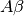

Data Format¶
Two different types of files are required as input for our scripts. The first defines the structure of a PPI network; whilst the second contains the expression values associated for a given gene in a siRNA screen.
In the following, we provide details on the specific files included in our work; however, any other combination of files, provided that they follow the same format, should allow the user to perform its own studies.
Network definition¶
A network is defined via a plain text data file that contains a list of interactions. Each line of the file contains a tab separated pair of integer numbers that define a single interaction, found between a pair of nodes. Each number corresponds to a gene identifier (NCBI GeneID), unique to each gene.
Included in the data folder of the distributed code is the file that
describes de Chuang PPI Network, namely network1_chuang.txt. The first few
lines of this file are as follows:
6927 55281 HNF1A TMEM140
164 8906 AP1G1 AP1G2
3689 11082 ITGB2 ESM1
57326 151871 PBXIP1 DPPA2
5336 23236 PLCG2 PLCB1
Each line is interpreted as the definition of an undirected edge between two nodes, for example, the first line indicates that there is an edge between gene HNF1A (id: 6927) and gene TMEM140 (id:55281).
Network Weights¶
The MCL (Markov Clustering) algorithm is based in the idea that the strength (or weights) of the links in the network directly influence the way in which the nodes can be clustered together, thus in order to use the algorithm, we need to provide our network with some information regarding the edges’ weights.
In our experiments, the weights of the edges are derived from siRNA screen readouts
measured at the nodes. Included in the data folder of the distributed code is
file weights1_APP_siRNA.xlsx that includes values for four distinct Amylodoigenic
 peptides, plus cell viability.
Each row of the table contains the information for a single gene. A gene identifier
(that should match the one used in the network definition file) is included in
column GENEID, whilst values for each readout are given in columns VIA,
AB40, AB42, SAPPA and SAPPB, respectively.
Notice that, in order to use different weight information, a similar file needs
to be provided. In such case the GENEID has to be included in the file, while
additional rows for readouts can be named arbitrarily.
The first lines of file weights1_APP_siRNA.xlsx are as follows:
GENEID VIA AB40 AB42 SAPPA SAPPB
1 -0.293511677 0.509799083 0.063421219 1.624921978 1.312808441
2 -0.475129933 0.757599276 1.043316923 0.266479941 0.49134353
9 2.377759282 -1.213443729 -1.33048629 -0.458606909 -1.47113369
10 -0.679732748 -0.415496912 -0.230574096 0.519560455 -0.136712419
12 0.505662562 0.191583755 0.569690918 1.248911281 1.476637361
Warning
Although the GENEID used in both files is the same, that does not mean
there is a direct match between all genes in both files, this is, there might
be genes that, even when being part of the network, might not have an
associated list of readout values.